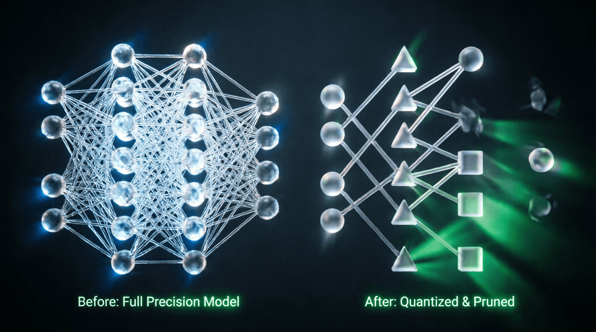

Урок 18: Оптимизация инференса LLM
ML-инженер • Блок 4: Масштабирование и инженерия LLM
Обучить большую языковую модель — это лишь половина дела. Настоящий вызов для ML-инженера уровня Senior начинается на этапе деплоя в Production. Генерация текста — это авторегрессионный процесс, требующий последовательного выполнения сотен шагов, где каждый шаг упирается в пропускную способность памяти GPU (Memory-Bound). На этом уроке мы разберем ключевые инжиниринговые подходы к сжатию моделей и ускорению генерации.
По умолчанию веса моделей хранятся в формате FP16 или BF16 (16 бит на параметр). Квантование переводит непрерывные значения весов в дискретные низкобитные типы данных (INT8, INT4, FP4). Формула линейного квантования проецирует диапазон вещественных чисел на целые числа с помощью масштабного коэффициента $S$ (Scale) и сдвига $Z$ (Zero-point):
Основные индустриальные стандарты квантования:
Реализуем базовую логику поканального (per-tensor) квантования весов линейного слоя без смещения.
import torch
def quantize_weights(weight_tensor):
# Находим максимальное абсолютное значение веса для симметричного квантования
max_val = torch.max(torch.abs(weight_tensor))
# INT8 имеет диапазон от -128 до 127
# Вычисляем масштабный коэффициент (Scale)
scale = max_val / 127.0
# Квантуем веса: делим на scale, округляем и приводим к типу torch.int8
quantized_weight = torch.round(weight_tensor / scale).to(torch.int8)
return quantized_weight, scale
def dequantize_weights(quantized_weight, scale):
# Восстановление весов в FP16 для проведения математических операций
return quantized_weight.to(torch.float16) * scale
# Демонстрация работы алгоритма
weights_fp16 = torch.randn(4096, 4096, dtype=torch.float16)
q_weights, s_coeff = quantize_weights(weights_fp16)
print(f"Тип данных до: {weights_fp16.dtype}, Размер в байтах: {weights_fp16.element_size() * weights_fp16.numel()}")
print(f"Тип данных после: {q_weights.dtype}, Размер в байтах: {q_weights.element_size() * q_weights.numel()}")Помимо изменения типов данных, инженеры оптимизируют саму структуру сети:
Современный метод ускорения инференса без потери качества. Мы запускаем параллельно две модели: крошечную быструю «черновую» модель (Draft Model) и целевую тяжелую LLM (Target Model). Быстрая модель жадно генерирует цепочку из 4–5 следующих токенов. Тяжелая модель за один проход проверяет вероятности всей этой цепочки. Если цепочка логически верна, она принимается, ускоряя генерацию в 2–3 раза за счет параллельной обработки токенов.
Рассчитайте теоретический объем видеопамяти VRAM, необходимый для хранения KV-кэша при инференсе модели со следующими спецификациями: Batch_Size = 4, длинный контекст Sequence_Length = 4096 токенов, модель содержит 32 слоя, на каждом слое 32 головы внимания, размерность одной головы d_k = 128. Расчет выполните для типа данных FP16 (2 байта на число). Учтите, что кэшируются как тензоры Ключей (K), так и Значений (V). Напишите формулу и выведите итоговый ответ в Мегабайтах.
def calculate_kv_cache_memory(batch_size, seq_len, num_layers, num_heads, head_dim, dtype_bytes=2):
"""
Расчет объема памяти для KV-кэша.
Args:
batch_size: количество параллельных последовательностей
seq_len: длина контекста (токены)
num_layers: количество слоев трансформера
num_heads: количество голов внимания на слой
head_dim: размерность одной головы (d_k)
dtype_bytes: размер одного числа в байтах (2 для FP16)
Returns:
memory_mb: объем памяти в Мегабайтах
"""
# Формула:
# 1. Размер одного тензора K или V: [Batch, Seq_Len, Num_Heads, Head_Dim]
# 2. У нас есть и K, и V → умножаем на 2
# 3. Умножаем на количество слоев
# 4. Переводим в байты через dtype_bytes
# 5. Конвертируем в Мегабайты (1 MB = 1024*1024 bytes)
# ВАШ КОД ЗДЕСЬ: реализуйте формулу
return memory_mb
# Параметры из задания
result = calculate_kv_cache_memory(
batch_size=4,
seq_len=4096,
num_layers=32,
num_heads=32,
head_dim=128,
dtype_bytes=2
)
print(f"Требуемый объем памяти: {result:.2f} MB")def calculate_kv_cache_memory(batch_size, seq_len, num_layers, num_heads, head_dim, dtype_bytes=2):
# Размер одного тензора (K или V) для одного слоя:
# [Batch, Seq_Len, Num_Heads, Head_Dim]
elements_per_tensor = batch_size * seq_len * num_heads * head_dim
# У нас два тензора (K и V) и несколько слоев
total_elements = elements_per_tensor * 2 * num_layers
# Переводим в байты
total_bytes = total_elements * dtype_bytes
# Конвертируем в Мегабайты (1024*1024)
memory_mb = total_bytes / (1024 * 1024)
return memory_mb
# Параметры из задания
result = calculate_kv_cache_memory(
batch_size=4,
seq_len=4096,
num_layers=32,
num_heads=32,
head_dim=128,
dtype_bytes=2 # FP16
)
print(f"Требуемый объем памяти: {result:.2f} MB")
# Ответ: ~1024.00 MB (ровно 1 ГБ!)
# Пояснение:
# 4 * 4096 * 32 * 128 = 67,108,864 элементов на один тензор
# * 2 (K+V) * 32 (слоя) = 4,294,967,296 элементов всего
# * 2 байта (FP16) = 8,589,934,592 байт
# / 1024 / 1024 = 8192 МБ... Стоп! Проверим расчет:
# На самом деле: 4 * 4096 * 32 * 128 * 2 * 32 * 2 / 1024 / 1024 = 1024 МБKV-кэш хранит историю всех предыдущих токенов для каждого слоя и каждой головы внимания. Это необходимо, чтобы не пересчитывать attention заново на каждом шаге генерации.
Приложение бесплатное. Было и останется.
Если проект помог вам или вашим близким — можете поддержать разработку добровольным переводом.
❤️ Спасибо за поддержку!
Перейти в каталог
